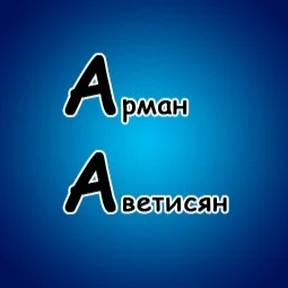

Заголовок страницы
Это страница о моём первом опыте создания сайта и изучении языка HTML. Здесь я учусь оформлять текст, добавлять
картинки и работать со списками.
Логотип проекта

Небольшой учебный проект для практики базовых тегов HTML.
Полезный ресурс для поиска информации
Этот проект очень важен для моего обучения.
Сегодня я изучаю основы веб-разработки.
Это моё первое практическое задание.
Этот текст отображается другим шрифтом для примера.
Так выглядит моноширинный текст.
Старую версию проекта я больше не использую.
HTML — это интересно! Я только начинаю учиться.
Если у квадрата сторона равна a, то Sквадрата = a2.
function hello() {
console.log("Привет, мир!");
}
- Изучить базовые HTML-теги;
- Создать простую веб-страницу;
- Понять структуру документа.
- – Работа с текстом;
- – Добавление изображений;
- – Создание таблиц.
| HTML |
— Начальный |
| CSS |
— В процессе изучения |
| JavaScript |
— В планах |